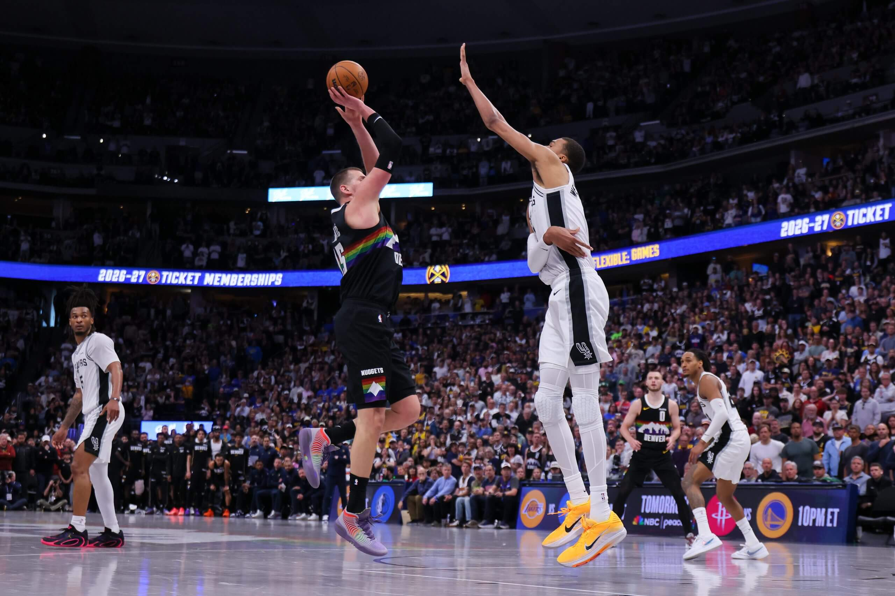

It was the best of times, it was the worst of times.
On Saturday, the NBA gave us one of the most entertaining games of this or any other season, an overtime classic between the San Antonio Spurs and Denver Nuggets featuring MVP candidates Victor Wembanyama and Nikola Jokić going head-to-head, one that culminated in an impossible Jokić spinning stepback that he launched several miles into the stratosphere and just beyond Wembanyama’s fingertips before it magically crash-landed into the net.

Nikola Jokić was blocked twice by Victor Wembanyama on Saturday but got a crucial one over him late in the game.Justin Edmonds / Getty Images
On Friday, unfortunately, the NBA gave us perhaps the worst single evening of basketball in its history. Despite having nine games of the schedule, there was virtually no good one to be found: A record-setting five of the nine games were decided by more than 30 points, and only one — the Failure Bowl between the Sacramento Kings and New Orleans Pelicans — was close at the end.
In a related story, seven of the nine games involved a team that was tanking playing against one of the 20 teams that long-ago sealed up a spot in the league’s Play-In or playoff tournament, and those matchups accounted for all five of the 30-point routs.
That’s the thing about tanking: The cost isn’t just to the tanking team’s fans, many of whom might favor it. It imposes terrible basketball on everyone else, too.
As bad as these teams were before their decisions to tank, they’ve become orders of magnitude worse since. As I’ll show you below, as a group, they’ve managed to cut their already-low win probabilities by more than half.
That Spurs-Nuggets classic felt so jarring, in part, because we’ve witnessed so much bad basketball over the past two months. To review: We’ve basically known the identity of all 20 postseason teams since the Feb. 5 trade deadline and, as a result, have had an almost unprecedented tanking season in duration (more than two months) and breadth (eight teams overtly attempting to pile up losses and a ninth, the Milwaukee Bucks, not exactly chasing Ws either).
Now that the Great Tank of 2026 is nearly over, it’s time to quantify the costs. And they appear significant.

Teams are tanking to better there chances of getting there ping-pong ball drawn in high postion at the nba draft. NBA.com.
First, obviously, there is the quality issue. As noted by the Associated Press’ Tim Reynolds, Friday was only the second time in NBA history that there were at least nine games played and the average margin of victory was at least 24 points. The other one came … five days earlier.
On March 29, all nine games were decided by double figures, although tanking only factored prominently in three, and only one of those (the Washington Wizards’ 35-point loss at the Portland Trail Blazers) was truly embarrassing.
So, I’ll offer this small caveat: Those March 29 scores spoke to the fact that blowouts are just more common in this era because of the additional variance of the 3-point shot and the increased pace; throw in a bewildering faceplant from the Orlando Magic (a 52-point loss in Toronto to the Raptors) and you had history.
That said: Once is a fluke, but twice in a week is a trend. Tanking was still some factor on March 29 and it was the factor on Friday.
I want to break this down at a deeper level, however, because I’m worried the sheer quantity of teams tanking hides just how awful they have been when they haven’t been playing each other.
The Wizards and Brooklyn Nets, for instance, played an absolute joke of a game on Sunday in which only two of the 18 players who participated were even in an NBA rotation when the season began. But it was a close game that the Nets eventually won by six, so it looks like a sort-of-respectable, close game and, by rule, one of the two teams had to win.
However, once you take away those types of games, the performance of the tanking teams is truly ghastly. For instance, do you know what the Nets’ and Wizards’ combined record is against the 20 postseason teams since the All-Star break? It’s 1-39.
ONE AND THIRTY-NINE!
The Nets accidentally beat the Detroit Pistons 107-105 on March 7, and that’s the only time either they or the Wizards beat one of the 20 teams that will make the postseason. In a related story, of Brooklyn’s 107 points in that game, 99 came from players who have been shut down since and weren’t available for the Washington sham.
Even the tankers that seem quasi-respectable at a glance are much more decrepit once you weed out games against their fellow tankers. Sacramento, for instance, is an inconspicuous 9-12 in its last 21 games, but only two of those wins have come against the postseason 20.
However, in their past 25 games against the teams that actually care, the Kings are a ghastly 2-23, making their shock win in the DeRozan Bowl in Toronto last Wednesday stand out that much more. (Alas, that didn’t stop the Kings from passing four other teams in the reverse standings and lowering their odds of getting a top-four pick in a loaded draft.)
You can say something similar about every one of this tanking season’s Notorious Nine. If you just focus on teams’ records since the All-Star break, and games against the 20 teams that will at least make the Play-In, here’s how our standings look:
Overall, the eight tanking teams are 17-144 against the 20 legit squads since the trade deadline, a 0.106 winning percentage. To put this achievement into perspective, considering that the Chicago Bulls alone won 18 games against the postseason-20 before the trade deadline.
Wait, it gets worse: The tankers haven’t exactly been taking their opponents to the wire, either. Our Notorious Nine have lost by an average margin of 13.9 points since the All-Star break. The Utah Jazz alone lost games by 35 and 34 this weekend.
Let me underline this for emphasis: The average team in this group, when faced with any type of real basketball game, is playing as bad as the worst team in history (the 7-59 Charlotte Bobcats during the lockout-shortened 2011-12 season), posting a despicable .106 winning percentage that equates to an 8.7-win season over 82 games, with nearly the worst scoring margin in NBA history.
And this isn’t one team doing this. It’s nine of them.
If you don’t believe how horrible they are, consider this: The New Orleans Pelicans, who themselves are mired in a brutal 25-54 campaign but have no tanking incentives because they traded their unprotected first-round pick, have played eight games against these other nine teams … and won six of them by double figures. As bad as they are, they are still a full order of magnitude superior to what the tankers put on the floor.
There’s a small counterpoint, here: These teams were already bad, and most of these games they lost still would have been Ls. And yes, most bad teams get their wins in games against other bad teams, so their record in games against the top 20 is always going to be ugly.
Still, it’s not supposed to be Medusa-ugly like this. Overall, those same teams were a much more respectable 85-248 (.255 win percentage) against the playoff 20 before the break, with a minus-8.8 margin. Even the worst of them (Washington at 5-31, .139) won at a far greater rate than this group did after the break.
If you apply that .255 winning percentage to the 152 games since the All-Star break, and subtract from the .106 winning percentage we actually achieved, we can estimate that the win probability of these teams cratered by more than half — an amazing achievement when you’re already a heavy underdog! — and that the top 20 teams in the league have been gifted roughly 25 extra wins by the combined tanking/rebuilding/whatever-you-want-to-call-it strategies of these nine teams.
That amounts to 1.25 extra wins per team so our Notorious Nine can take on nearly three extra losses apiece, which helps explain how a 30-team league can have 19 teams with winning records.
You might surmise that some of these gift wins would have happened anyway because of rebuilding strategies; for instance, the Memphis Grizzlies were bound to be worse no matter what once they traded Jaren Jackson Jr. for draft picks and spare parts. On the other hand, teams such as the Indiana Pacers, Wizards and Jazz made trades to acquire significant players and then almost immediately shelved them with dubious injuries.
All of that isn’t just messing with the quality of the game-watching on a Friday night; it’s also messing with the league — making players and teams harder to evaluate and adding free wins to the teams fortunate enough to get the tankers on their late-season schedule.
For instance, what are we here in Atlanta supposed to think of the Hawks, who have won 18 of their last 20 games but gained 11 of those 18 wins against the Notorious Nine? What are we supposed to think when Bam Adebayo scores 83 points, but it comes against a joke Wizards lineup?
It’s not just Atlanta. Virtually every torrid hot streak of the last two months comes with a giant asterisk because of the prominence of tankers in the schedule. The Charlotte Hornets have gone 17-5 in their last 22 games, but nine of the wins came versus tankers. The Los Angeles Lakers won 16 of 18 before being ravaged by injuries, but six of them were tank wins. The Spurs won 21 of 23 coming out of the break … but seven of them were against the Notorious Nine.
Even evaluating your own team gets harder. What should the Cleveland Cavaliers think about their team if they go into the playoffs having won 11, 12 or 13 of their final 16 games … but seven of the wins are automatic ones handed on a platter, and the eighth game was somehow a loss to the Dallas Mavericks?
“The Status quo is no longer an option.”
- John Hollinger
And this, my friends, is why the league has to pursue the relatively draconian measures it is now considering to disincentivize tanking. In the current environment, multi-team chases to see who can sink the lowest to get draft position are a logical response to the draft’s incentives, but it’s badly distorting the league and killing the fan experience in the final two months. I worry about unintended consequences with some of the league’s proposals, but the status quo is no longer an option.
Obviously, not every game can be Jokić vs. Wemby. But Saturday’s classic should serve as a stark reminder that this is the level of basketball we’re supposed to be watching, and you can’t get it if a third of the teams are losing on purpose. Now that the data is in, the conclusion is clear: Tanking caused already bad teams to achieve historic awfulness and it was only disguised by the fact that they sometimes got to play against each other.
— Eric Koreen contributed to this report.
This story was originally published by The New York Times, and modified as part of coursework for the Philip Merrill College of Journalism at the University of Maryland, College Park. Click here to view the original story.